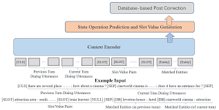
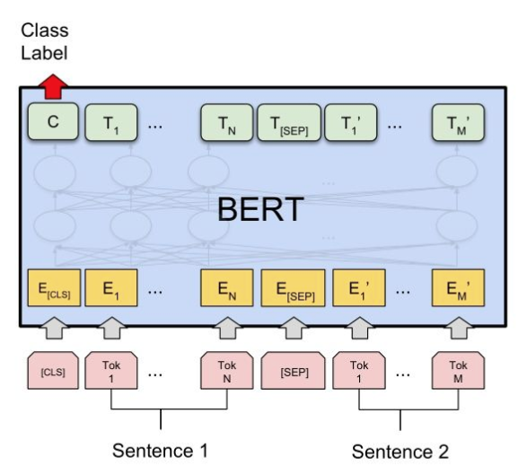
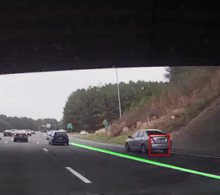
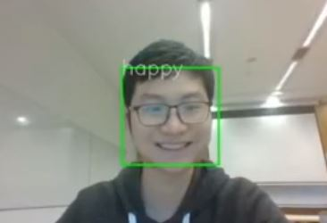

Yuhao Ding
I am a Master Student in computer science at Yale University. I graduated from New York University Shanghai majoring in Computer Science. My interest lies in Natural Language Processing, Machine Learning, Software Developing and several other fields.

-
April, 2021
I joined Tencent as a Software Engineer Intern, working on automated ads generation.
May, 2021
I recently completed a new research on dialog state tracking, supervised by Professor Yik-Cheung Tam. We improved SOM-DST model in multi-domain dialog state tracking task by using ontology information in Bert Model. See paper here: https://arxiv.org/abs/2108.11275 or Paper here.
Sep, 2020
Funded by DURF grant, I finished an indenpendent research on algorithm fairness. In this work I invented a new post-processing model to correct fairness in Adult Income Dataset: Paper here.
May, 2020
In collaboration with Minyi Wan, I finished a NLP research on Bert and RoBERTa's performance on aspect-based sentiment analysis, in the class Machine Learning for Language Understanding led by Prof. Samuel Bowman: Paper here.
Jun, 2019
I joined HSBC Data Science team as a Data Scientist Intern.
Sep, 2019
I finished a project in collarboration with Boyan Xu which implement a algorithm that could auto detect illegal parking on highway roads based on Car Front Camera images.Paper here.
Jun, 2018
I joined BOSCH China as a artificial intelligence researcher in interdisplinary areas between AI Techs such as Auto-Driving and Intellectual Property.
Email: yd1158@nyu.edu
Work Experience
Software Engineer Intern, Tencent
TencentDeveloped algorithms on automated creation of ads based on creative elements. Functionalities include visual center detection, automatic layout adjustment, smart banner resize or extension etc. with self-developed modules based on OpenCV and Yolo. Supported more than 100 ads channels. Significantly improved Clickthrough Rate (ctr) by 25%.
Developed and deployed the backend for the above algorithm with Flask and COS SDK. Enabled 1000+/week ads creation.
Scraped data from 3 mainstream video websites with selenium and performed data-driven analysis by deconstructing popular video ads with 50+ labels. Helped produced a 10-page report on the analysis of most useful video components.
April – August 2021Data Scientist Intern, HSBC
HSBC ChinaDesigned and built a model that projects customer behaviors, using more than 60 million transactional data, which eventually classified 500,000 credit card customers with more than 100 labels. Actively engaged with Python, Teradata (a SQL database) and machine learning methods such as Regression and Boosting.
Analyzed data of 20 million customer behaviors on mobile banking associated with their lingering time on each page. Based on the findings, produced a 5-page report suggesting ways to improve mobile banking efficiency
Presented a 90-minute presentation to HSBC executives (head of Data and Analytics) on our models for customer modelling and suggestions for mobile banking.
July – August 2019IP Intern, BOSCH
BOSCHHere is a recommendation letter offered by my boss (Vice President of Bosch(China) Investment Ltd.).
Processed more than 100 documents in anti-infringement from the customs office and communicated with executives about the progress.
Engaged in patent searches for 5G technologies, researched relevant 5G patents within China and US patent database.
Completed a 20-page research report individually on IP issues related to artificial intelligence, which analyzed relevant legal issues in autonomous driving and blockchain. The report was presented to BOSCH Vice Present for her reference.
Conducted a one-hour report on artificial intelligence and relevant legal controversies to BOSCH in-house lawyers.
June – August 2018
Research Projects
Ontology-Enhanced Slot Filling
Supervised by Prof. Yik-Cheung TamFinal Paper: click here or Arxiv Link
Slot filling is a fundamental task in dialog state tracking in task-oriented dialog systems. In multi-domain task-oriented dialog system, user utterances and system responses may mention multiple named entities and attributes values. A system needs to select those that are confirmed by the user and fill them into destined slots. One difficulty is that since a dialogue session contains multiple system-user turns, feeding in all the tokens into a deep model such as BERT can be challenging due to limited capacity of input word tokens and GPU memory. In this paper, we investigate an ontology-enhanced approach by matching the named entities occurred in all dialogue turns using ontology. The matched entities in the previous dialogue turns will be accumulated and encoded as additional inputs to a BERT-based dialogue state tracker. In addition, our improvement includes ontology constraint checking and the correction of slot name tokenization. Experimental results showed that our ontology-enhanced dialogue state tracker improves the joint goal accuracy (slot F1) from 52.63% (91.64%) to 53.91% (92%) on MultiWOZ 2.1 corpus.
Improving Gender Fairness for Random Forest Model through a Post-processing Method
Funded by Dean's Undergraduate Research Grant, supervised by Prof. Siyao GuoFinal Paper: click here
Prediction related to classification problems, such as predicting incomes, may lead to bias against certain groups of people. Metrics on fairness is thus invented to prevent these kinds of bias. In this project, we focus on Adult Income Dataset by UCL, and use Random Forest Model to classify income levels. To neutralize gender bias, we invented a post-processing method which we called corrector network. We will then shown the results compared with several baseline models to show its efficiency. We will share our understandings on why and how the model works.
Analyzing BERT and RoBERTa Performance on Aspected-Based Sentiment Classification on Financial Microblog and Headlines Dataset
Independent Research Project · In collaboration with Minyi WanGithub link of the project: click here
Final Paper: click here
A sentence may have different sentiments towards different aspects of it.
In this project, we choose a Financial Microblog and Headlines Dataset that contains aspects information, presented as FiQa2018 Challenge, and focus on two questions:
1) How does feeding aspect features affects BERT and RoBERTa performance?
2) And how do both models perform on complicated sentences where a sentence may have different aspects and potentially different sentiments toward each of them?
A Prototype of Emergency Lane Occupation Detection System
Independent Research Project · In collaboration with Boyan XuFinal Paper (in ACL style): click here
Illegal occupancy of emergency lanes is a common type of traffic violation which may result in serious consequences by preventing the access of special vehicle.
This project developed a system that could automatically monitor and detect the illegal occupancy of emergency lanes by using the in-vehicle cameras of social vehicles.
The method used are majorly computer vision algorithms.
Real-Time Facial Expression Recognition using OpenCV and Convolutional Neural Network
Class Project · In collaboration with Samuel ZhongA Youtube Video highlighting the project.
Coded bottom-up a “VGG19” Convolutional Neural Network to train an emotion detector.
Used IMDB dataset for classification, employed techniques such as weight decay, momentum, etc.
Education
Yale University
Master of Science in Computer ScienceSeptember 2021 - May 2022New York University Shanghai
Bachelor of Science in Computer Science, Major HonorsCumulative GPA: 3.932 /4.0. Summa Cum Laude (Top 5%)
Major GPA: 4.0 /4.0
GRE: V162+Q170+AW4.5
Relevant Coursework: Machine Learning, Databases, Algorithms, Optimization and Math Modelling, Fintech, etc.
International Exchanges: NYU New York (Fall 2019 and Spring 2020), NYU Abu Dhabi (Winter 2019)
Honors: NYU Shanghai Global Elite Scholarship, Dean’s List Honor, Recognition Award with Scholarship (for both Academic Achievements and Community Contributions)
September 2017 - May 2021
Awards & Certifications
- NYU Shanghai Global Elite Scholarship
- Dean’s List Honor in 2018, 2019, 2020, 2021
- Recognition Award with Scholarship (for both Academic Achievements and Community Contributions) in 2018, 2019
- Second Prize, Top Individual, HSBC Financial Data Modelling Contest
- First Prize, Shanghai, "Star of Ourlook" English Speaking Context (Broadcasted on TV)